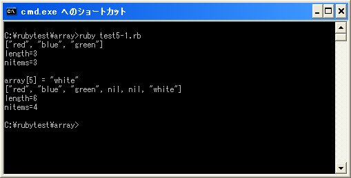

配列のサイズの取得と新しい要素の追加
作成された配列に含まれる要素数を取得する方法を確認します。Arrayクラスで用意されている「length」メソッドを使います。
配列オブジェクト.length
配列に含まれる要素の数(最後の要素のインデックス+1)を返します。また「length」メソッドの別名である「size」メソッドも同じです。
具体的には次のように記述します。
array = Array["赤", "青", "緑"] print(array.length)
配列には3つの要素が含まれていますので、画面には「3」が出力されます。
またオブジェクトが代入されていない要素(nilが代入されている要素)は除外する場合にはArrayクラスで用意されている「nitems」メソッドを使います。
配列オブジェクト.nitems
配列に含まれる要素の数で「nil」が代入されている要素を除いた数を返します。
具体的には次のように記述します。
array = Array["赤", nil, "緑"] print(array.length) print(array.nitems)
「length」メソッドは「3」を返しますが、「nitems」メソッドは「2」を返します。
配列のサイズの拡大
配列オブジェクトで使われている最大のインデックスよりも大きな数を指定して要素を指定しオブジェクトを代入した場合、配列のサイズは自動的に拡張されます。
array = Array["赤", "青", "緑"] array[3] = "黄"
配列オブジェクトを作成した時は3つの要素を持っていますが、インデックスに「3」の要素に対してオブジェクトを代入すると、要素数は自動的に拡張されて4つの要素を持つ配列になります。
配列のサイズを拡大する場合、インデックスは(最大のインデックス + 1)である必要はありません。
array = Array["赤", "青", "緑"] array[5] = "黄"
上記の場合はインデックスが「5」の要素にオブジェクトを代入しています。この時配列は「赤」「青」「緑」「nil」「nil」「黄」と言う5つの要素を持つ配列となります。オブジェクトが代入されていない要素は「nil」オブジェクトが代入されたものとして扱われます。
サンプルプログラム
では簡単なプログラムで確認して見ます。
#! ruby -Ku
require "kconv"
array = Array["red", "blue", "green"]
p array
print("length=", array.length, "¥n")
print("nitems=", array.nitems, "¥n¥n")
array[5] = "white"
print('array[5] = "white"' + "¥n")
p array
print("length=", array.length, "¥n")
print("nitems=", array.nitems, "¥n")
上記のプログラムを「test5-1.rb」として保存します。文字コードはUTF-8です。そして下記のように実行して下さい。

( Written by Tatsuo Ikura )

著者 / TATSUO IKURA
初心者～中級者の方を対象としたプログラミング方法や開発環境の構築の解説を行うサイトの運営を行っています。